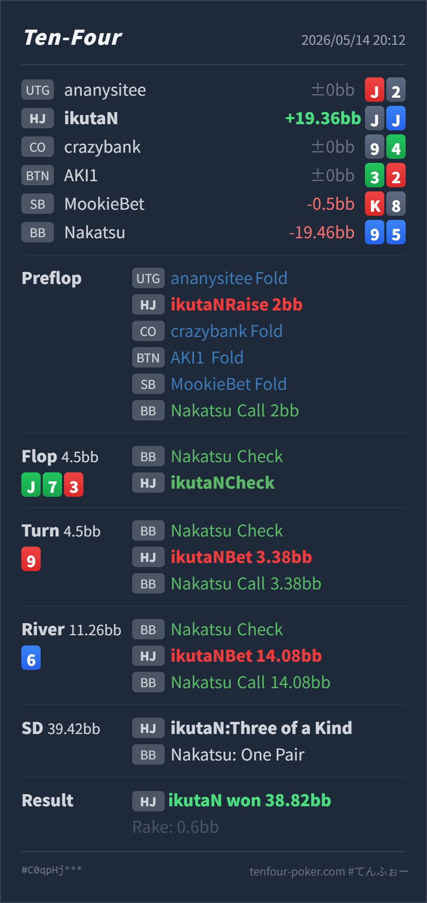

Preflop
良いJ♠J♦ は明確なvalue openです。
GTO基準ではHJの J♠J♦ 2BB openは自然です。flop J♣ 7♣ 3♥ のcheck backは罠として成立しますが、drawが多いboardなので小さくbetしてvalue/protectionを取る方が標準寄りです。turnから大きく取りに行き、river overbetで9xからcallを取れた点は実戦的に良い結果です。
J♠ J♦9♦ 5♣J♣ 7♣ 3♥ 9♥ 6♦J♣ 7♣ 3♥ でtop setをcheck backし、turn/riverで大きくvalueを取りに行くラインが良いか。J♠ J♦ J♣ 9♥ 7♣ のthree of a kindです。Villainは 9♦ 9♥ J♣ 7♣ 6♦ のone pairで、Heroが勝っています。ただし T8、85、54 のstraightには負けます。J♠ J♦9♦ 5♣2BB, CO fold, BTN fold, SB fold, BB Villain call 2BBJ♣ 7♣ 3♥ 9♥ 6♦4.5BB, BB Villain check, HJ Hero check4.5BB, BB Villain check, HJ Hero bet 3.38BB, BB Villain call11.26BB, BB Villain check, HJ Hero bet 14.08BB, BB Villain call38.82BB, rake 0.6BB
良いJ♠J♦ は明確なvalue openです。
J♣ 7♣ 3♥やや消極的
Heroはほぼ最上位ですが、clubやstraight系の無料カードは相手に得をさせます。
9♥良い
Heroはまだかなり強いsetですが、相手のpair + drawも増えています。
6♦良い寄り
Heroはtop setで非常に強く、BBのJx/9x/two pairから大きく取れます。ただしnutsではありません。
| 論点 | その場で置いた見立て | どこがズレやすいか | 次回の基準 |
|---|---|---|---|
| flop check back | top setなので罠にしたい | J♣ 7♣ 3♥ はclub drawやstraight drawが多く、BBの7x/3x/pocket pair/drawからすぐvalueを取れます。check backは成立しますが、取り逃しも出ます。 | top setでもtwo-toneでは小さめbetを基本にする |
| turn大きめbet | flopで隠したのでここから取る | 9♥ はBBの9xやT8/86/heart drawを増やします。Heroはまだかなり強いですが、無料カードを与えた後なので相手の改善も増えています。 | turnは大きめbetで良い。callされたらriverの完成筋を確認する |
| river overbet | setなので最大を取りたい | 6♦ はflush missedですが、T8/85/54 のstraightが残ります。top setは非常に強い一方、完全なnutsではありません。 | overbet可。ただし相手がstraight寄りにraiseするなら降りる準備を持つ |
| ストリート | その時点の見え方 | 実ハンドの位置づけ | 評価 | その場の一手 |
|---|---|---|---|---|
| Preflop | UTG fold後、HJからopenする場面です。 | J♠J♦ は明確なvalue openです。 | 良い | 2BB openで問題ありません。 |
Flop J♣ 7♣ 3♥ | BB defend後のSRPで、Heroはtop setです。BBには7x/3x、club draw、98/86/65系のdrawがあります。 | Heroはほぼ最上位ですが、clubやstraight系の無料カードは相手に得をさせます。 | やや消極的 | check backもmix候補ですが、基本は小さめbetでvalue/protectionを取ります。特にBBがdrawやpairを降りにくいならbet優先です。 |
Turn 9♥ | flopがcheckで回った後、BBが再度checkしています。9はBBの9x、T8/86、heart drawを増やします。 | Heroはまだかなり強いsetですが、相手のpair + drawも増えています。 | 良い | 3.38BB into 4.5BB は良いです。ここからpotを作って、pair/drawに価格を払わせます。 |
River 6♦ | flushは外れましたが、straight完成候補が一部あります。BBはcheckし、Heroはvalueを取りに行く場面です。 | Heroはtop setで非常に強く、BBのJx/9x/two pairから大きく取れます。ただしnutsではありません。 | 良い寄り | 14.08BB overbetは、相手がone pairまでcallするならかなり良いです。標準的にはpot前後でも十分ですが、実戦の相手には大きく取れて正解です。 |
J♣ 7♣ 3♥ のようなdrawが多いboardでは、flopから小さく打つ方が安定します。T8、85、54 が残るriverなので、raiseされた時だけは相手傾向込みで慎重に見ます。9♦5♣ で、turnに9を拾ってriver overbetまでcallしています。このタイプには、強いmade handでriverを小さくまとめず、大きくvalueを取りに行く調整が有効です。